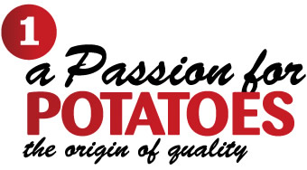
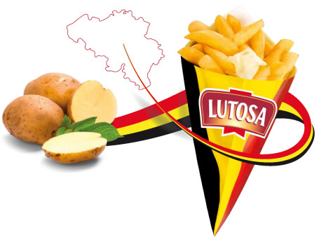

In Lutosa’s world, potatoes are our passion. The ideal terrain, outstanding expertise, and people of talent, all contribute to the production of the jewel of Belgian cuisine. It is no coincidence that in Belgium “having french fries” means being full of energy…
Mission I love Belgian fries Organisation
